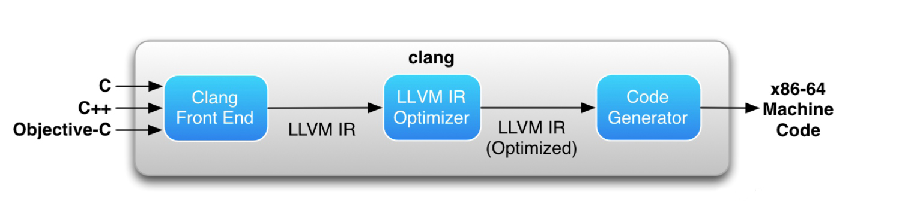

这是Swift源码 系列第二篇，内容主要是Swift 源代码的相关分析和探究
Swift 源码极其庞大，里面所使用的语言囊括了 Swift、 Python、C++等，因此我也觉得这是一个巨大的坑，我不知道能不能把它填完，不过我会尽力而为的
这次来看Swift 中 Bool 类型的源代码
####定义
Swift 对Bool的定义
1 | public struct Bool |
在Swift 中 这些类型大多是有结构体(struct) 定义的，也就是基本类型的（value-type）特征
所以Bool 中唯一的实际值：
1 | internal var _value: Builtin.Int1 |
Builtin 是 Swift 内置库之一，由C+ + 写成，位于Builtins.cpp文件中。这个操作会调用 Builtin 会调用此文件中的 swift::getBuiltinType(ASTContext &Context, StringRef Name) 函数，这个函数将会给 LLVM 返回一个用以数据处理的类型。Name 参数就是要获取的类型名称。
####Builtin 调用
我们知道apple 是 Clang/Swift - LLVM 编译器架构：

在 Swift 编译器结构 的官方文档中描述了 Swift 编译器是如何工作的，分为如下步骤：
解析：解析器是一个简单的递归下降解析器（在 lib / Parse 中实现），带有集成的手动编码词法分析器。解析器负责生成没有任何语义或类型信息的抽象语法树（AST），并针对输入源的语法问题发出警告或错误。
语意分析：语义分析（在 lib / Sema 中实现）负责解析 AST 并将其转换为格式良好的完全检查形式的 AST，并在源代码中发出语义问题的警告或错误。语义分析包括类型推断，如果成功，则所得到的代码是类型检查安全的 AST 。
Clang导入器：Clang导入器（在 lib / ClangImporter 中实现）导入Clang模块，并将它们导出的 C 或 Objective-C API 映射到相应的 Swift API中。结果导入的 AST 可以通过语义分析来引用。
SIL生成：Swift中间语言（Swift Intermediate Language，简称SIL）是一种高级的，Swift特有的中间语言，适用于 Swift 代码的进一步分析和优化。SIL 生成阶段（在 lib / SILGen 中实现）将类型检查的 AST 降低到所谓的 “原始” SIL。SIL的设计描述在 docs/ SIL.rst 中可以看到。
SIL优化：在SIL优化（在 lib/Analysis，lib/ ARC，lib/LoopTransforms，和 lib/Transforms 中实现）执行额外的高级别，Swift 特有的优化的程序，包括（例如）自动引用计数优化，虚拟化和通用专业化。
LLVM IR生成：IR生成（在 lib/IRGen 中实现）将 SIL 降到 LLVM IR，此时LLVM可以继续对其进行优化并生成机器码。
在生成LLVM IR生成之前，需要先解析成语法树AST，而ASTContext也是Swift 内置库之一，在Builtin.Int1中，AST在ASTContext.cpp文件中会先调用
1 | static ModuleDecl *createBuiltinModule(ASTContext &ctx) { |
先不管addFile 方法，继续来看BuiltinUnit方法调用，BuiltinUnit方法会调用Module.cpp文件里的lookupValue方法，摘抄其中关键代码如下
1 | void BuiltinUnit::lookupValue(ModuleDecl::AccessPathTy accessPath, DeclName name, |
继续往下走，看lookupValue的方法
1 | void BuiltinUnit::LookupCache::lookupValue( |
终于到关键部分了，注意getBuiltinValueDecl返回的Name参数，还记得上面说的Name 参数就是要获取的类型名称。仔细看下getBuiltinValueDecl，getBuiltinValueDecl位于Builtins.cpp文件
1 | StringRef OperationName = getBuiltinBaseName(Context, Id.str(), Types); |
第一句代码就获取了getBuiltinBaseName的name类型，还要看getBuiltinBaseName代码
1 | StringRef swift::getBuiltinBaseName(ASTContext &C, StringRef Name, |
其中又调用了getBuiltinType方法，终于到最最底层了，查看getBuiltinType方法，摘抄关键代码
1 | if (Name.substr(0, 3) == "Int") { |
####GetBuiltinType分析
这个函数将会截取Name参数的前3个字符，这里也就是截取Int1的前3个字符，从而判断其是不是”Int”一族。随后，开始读取 “Int” 之后的内容，这里用到了定义在 StringRef 中的函数 getAsInteger(unsigned Radix, T &Result)。
1 | typename std::enable_if<!std::numeric_limits<T>::is_signed, bool>::type |
getAsInteger(unsigned Radix, T &Result) 函数将当前字符串解析为基于指定基数 (radix) 的整数，（例如，Radix 指定为 10 表明将以十进制来解析字符串，Radix 指定为 2 将以二进制来解析字符串。如果字符串无法解析的话，那么这个函数就会返回 true。如果字符串成功解析，那么结果就会写到 Result 当中。）
再看之前的getBuiltinType这里用预定义的 BitWidth 来存储转换过的数字，通过这个函数的调用，我们将能得到所读取到的数字 1。随后，要判断读取的数字是否在可处理范围之内（也就是(0,2048]）。如果成功的话，就返回一个内置的 BuiltinIntegerType 类型，其定义为：
1 | class BuiltinIntegerType : public BuiltinType |
这个内置的整数类型会直接与 LLVM 编译器的 IR 整数类型响应。当然，这其中最重要的值是 BuiltinIntegerWidth 类型的 Width。
BuiltinIntegerWidth Width;
这也说明了，对于 Swift 中内置的整数类型来说，无论是 Int8 还是 Int32，都是属于同样的类型，只不过它们的 Width 属性，也就是“位长（占用空间）”不同而已。
因此，Builtin.Int1 就很好理解了：这代表了一个内置的整数类型，它的位长是 1 个字节，也就是只有 “0” 和 “1” 两个值，刚好符合传统上布尔值的定义：0 代表 false，1 代表 true。
####布尔值初始化方法
Swift 内部定义了三个初始化方法：
1 | @_transparent |
设置为 public 的只有一个，也就是我们使用的 let bool = Bool()，这个初始化方法的默认值是 false。
解析：从语义上来看，@_transparent 类似于“将此操作视为一种原始操作(primitive operation)”。该特性会导致编译器在管道(pipeline)中更早地将函数内联。
这三个初始化很简单，第一个是将布尔值初始化为 false 的 init() 方法。它建立了一个值为 0 的 Int8 常量（因为 Swift 内部不支持 Int1 的直接建立），然后通过内置的转换函数，将 Builtin.Int8 转换为 Builtin.Int1。
init(_ value: Bool) 只是给Bool值一个Copy。
####BooleanLiteral 协议
1 | extension Bool : _ExpressibleByBuiltinBooleanLiteral, ExpressibleByBooleanLiteral { |
这里有两个协议，是布尔值的字面量协议扩展，实现这两个协议之后就可以使用 true 和 false 字面量或者 1 和 0 字面量直接赋值了。
注意：只有使用 _BuiltinBooleanLiteralConvertible 协议的方法才能使用 1 和 0 字面量进行赋值的，这里的 1 和 0 字面量都会被自动转换位 Builtin.Int1 类型。
_BuiltinBooleanLiteralConvertible 需要实现的是 public init(_builtinBooleanLiteral value: Builtin.Int1) 方法，BooleanLiteralConvertible 需要实现的是 public init(booleanLiteral value: Bool) 方法，这两个方法都被标注为了 @_transparent 作为原始操作。
解析：在目前 Swift 的规则当中，前面加上”_”(下划线)的协议、方法、变量等等都是只在内部有效的，也就是说它们需要设定为 internal 的权限。
####BooleanType 协议
这个协议主要需要实现一个 boolValue 的只读属性，其类型是 Bool。
在 Swift 源码的实现中，除了这个只读属性外，它还实现了两个方法：
1 | extension Bool { |
在Swift 4.0 中去掉了@warn_unused_result关键字，@warn_unused_result 是一个 GCC 内核中自带的关键字，这个关键字用于检查这个函数被调用的时候是否使用了其返回值，否则的话编译器会对其警告。换句话说，如果只是单纯的调用了此函数，并没有利用其返回值的话（比如说继续判断、赋值等等），那么编译器会弹出警告。
第一个方法是用以获取内置的实际值的，这是一个内部方法，它返回一个 Builtin.Int1 值。
第二个方法它可以根据一个同样实现 BooleanType 协议的值来实现自身的初始化。
####CustomStringConvertible协议
1 | extension Bool : CustomStringConvertible { |
这是一个 Swift 中绝大多数类型都实现的协议
布尔值实现此协议后，你就会发现它能够显示出其字面量的字符串，是 “true” 还是 “false”。
####Equatable、Hashable 协议
1 | extension Bool : Equatable, Hashable { |
这同样是Swift 中大多数类型都实现的协议，我们将在探寻 CompilerProtocols 文件时统一进行介绍。
布尔值实现此协议后，你就会发现它可以使用 == 来判断两个布尔值是否相等。
####其他
除此之外，布尔值源文件中还定义了两个方法：
第一个是一个根据 Builtin.Int1 获取布尔值的全局函数：
1 | @_inlineable // FIXME(sil-serialize-all) |
第二个是一个取相反布尔值的运算符函数：
1 | @_inlineable // FIXME(sil-serialize-all) |
除此之外,布尔值源文件中还有两个扩展方法方法：
第一个是让我们可以用 & 符号调用Bool类型
1 | public static func && (lhs: Bool, rhs: @autoclosure () throws -> Bool) rethrows |
第一个是让我们可以用 | 符号调用Bool类型
1 | public static func || (lhs: Bool, rhs: @autoclosure () throws -> Bool) rethrows |
####总结
至此，这就是我们所看到的 Swift 布尔值的源码内容了，这虽然是一个非常简单的类型，但是会经常用到，也为我们揭开了编译器和编译时的冰山一角。
参考文档:
Questing for Swift Source Code - 布尔值
关于LLVM，这些东西你必须知道！
Tips：LLDB 基礎
Builtin.Int1
从Swift桥接文件到Clang-LLVM
Build 过程
iOS App 的编译过程
__END__

文章出处：Swift - 2 [Bool.swift]
作者签名：所有伟大的事情都源于梦想，始于微不足道.
关于主题：Hexo - Live For Code
版权声明：文章除特别声明外，均采用 BY-NC-SA 许可协议，转载请注明出处